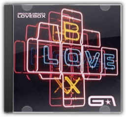
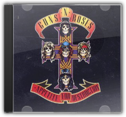
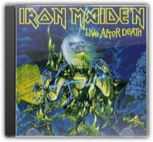

Since the break-up of teen duo Wham! in 1986, George Michael has constantly had to reinvent himself as a credible master of various musical styles. Ladies And Gentlemencharts this journey, from his duets with pop elite such as Aretha Franklin ("I Knew You Waiting (For Me)") and Elton John ("Don't Let The Sun Go Down On Me"), to dance floor classics such as "Too Funky" and "Fastlove" and bleak, evocative numbers such as "Jesus To A Child" and "A Different Corner". The songs are arranged on two complementing discs: the slower, ballady productions are on the first disc ("for the heart"), and the more dancey, poppy numbers are on the second ("for the feet"). The compilation also includes three tracks specially recorded for the album, most notably his duet with Mary J Blige on the Stevie Wonder classic "As". —John Galilee
A hint: there are noWham songs on George Michael's 10-tune tribute to the music of the 20th century. There isa song by the Police ("Roxanne"), but the reggae ballad is rendered in such a turgid manner, it resembles nothing so much as a lounge singer stoned on Quaaludes. Elsewhere, the silver-tongued former club kid covers Rodgers & Hart ("Where or When"), U2 ("Miss Sarajevo"), and Ewan MacColl ("The First Time Ever I Saw Your Face"). He pours so much calculated sentiment on top of each track that the entire record oozes a prefab corniness even Hallmark would recoil at. This is not to deny the power of George Michael's velvety, potent voice (although it does sound much better singing catchy dance-pop ditties) nor the fact that he's selected an interesting selection of ballads and folk and torch tunes. And Phil Ramone's production never veers from the middle of the road, unobtrusively shifting from smooth big-band jazz to Disney movie-ish harp accompaniment. If this CD is Michael's attempt to join the company of great song interpreters of the past, from Frank Sinatra to Billie Holiday, he will have to take a lot more chances and lose the sappy reserve. —Mike McGonigal

Lovebox
Groove Armada
Tom Findlay and Andy Cato have steadily been dismantling their chill-out crown ever since the single "At The River" saw them float into coffee-table ubiquity. Loveboxfinally stretches the duo's eclectic tastes beyond any semblance of continuity or restraint, finishing the job started on last year's Goodbye Country (Hello Nightclub).

Appetite for Destruction
Guns n' Roses
This is a glimpse of the future—and not because of its huge influence and umpteen million sales. The poor-little-rich-boy protest "Out ta Get Me" intimates that Axl Rose's egotism and martyr complex were soon to grow bigger than his head; still, Appetite's night-train wreck of punk and metal sounds and sensibilities make it more than just an emblem of its time. Whether GN'R are dancing with "Mr. Brownstone", penning a callow kiss-off letter to some chick named "Michelle", or passing out on somebody else's sofa, this was and remains a savage journey to the heart of the American—or at least the Hollywood—dream. —Rickey Wright

Live After Death
Iron Maiden
In the live arena heavy metal can be implausibly powerful; it can rattle teeth from gums, set ears ringing like the clappers of doom and, when concocted by the gentlemen of Iron Maiden, virtually fracture your skull. Live After Death, meanwhile (a packed double disc set recorded during the band's extensive World Slavery jaunt of 1984 and 1985), is the awesome, irrefutable proof. Of course, expertly hewn slabs of solid rock carefully concocted in recording studios are all very well. But "The Number Of The Beast" and "Run To The Hills" were simply made to be blasted through 152,000 watts of PA system by five young men with undiluted testosterone pulsing through their bulging, whiplash veins. Bruce Dickinson's astounding lung capacity is frankly terrifying at times—he—he's certainly not a man you'd ever want to meet in a blow football tournament—while the band are virtually aflame. —Ian Fortnam |

The original title of this album was to be The Impossible Princess, before the death of Princess Diana necessitated a change of plan. The most experimental Kylie album to date features collaborations with the Manic Street Preachers (on the Motown-esque "Some Kind of Bliss" and the loungecore "I Don't Need Anyone"), as well as Dave Ball of the Grid (and Soft Cell), Rob Dougan of Clubbed To Death and, once again, Brothers In Rhythm. The album flits effortlessly between various genres: from Indian-mantra style on the opening "Too Far", to a weird combination of Irish and eastern influence on "Cowboy Style", to trip-hop on "Jump;" it also finds Kylie doing the indie-chick thing on the Manics tracks, snarling Republica-like on "Limbo", and expanding her vocal range with Bjork influenced vocals, particularly on "Say Hey." This is the first time we hear Kylie get angry, sneer and, in fact, seem anything other than sorted, which is kind of odd—but fans of the Jewel/Alanis school of soul-baring female singer-songwriters may be surprised by how honest the whole thing sounds. —Ronita Dutta 
Four albums in, and it's quite clear that Liverpool's Ladytron are not susceptible to the dancefloor's flightier urges. Like its predecessors, Velocifero is electro-pop to the core, a sparking circuit of cold emotions and enveloping synths that despite its remove — or perhaps because of it — feels the perfect vehicle for some genuinely affecting pop songs. Boasting additional production work from Nine Inch Nails' Alessandro Cortini and Vicarious Bliss of notorious Parisian imprint Ed Banger, there is a certain robust quality of sound here: "Black Cat", sung by Mira Aroyo in her native Bulgarian, commences with booming drums and big black smears of synthesiser. But there are signs of a certain playfulness, too. "Ghosts" rides a lolloping glam beat that positions it in the area of Goldfrapp's Black Cherry, Helena Marnie's cool, mysterious vocal recalling Stereolab's Laetitia Sadler in its veiled promise: "There's a ghost in me/who wants to say I'm sorry/Doesn't mean I'm sorry". The Aroyo-sung "Kletva", meanwhile, is a cover of the theme from an old Bulgarian children's TV program, performed with an uncharacteristic jaunt that, while relatively alien to Ladytron, actually works rather nicely.—Louis Pattison 
Life on a String, Laurie Anderson's meld of Biblical references, New York wanderings, world rhythms and chamber music doesn't cohere like it should. Caught between bemusement and empathy, Anderson's knack for nailing oddball details can lift her work beyond mere wit, but not here. On "Dark Angel" she damns consumerism with lines that would've been laughable even as the outset of her career in the 1970s: "Look at all the things I bought... I'm feeling kind of lost." Her quoting "I'm a Little Teapot" on "One Beautiful Evening" sounds like self-parody, or the result of a lost dare with another artsy type. For true Anderson wigginess and smarts, try Ugly One With The Jewels, or for that matter, her classic debut Big Science. —Rickey Wright |

Liam Clancy
Collection Total:
1389 Items
1389 Items
Last Updated:
Oct 4, 2009
Oct 4, 2009


 Made with Delicious Library
Made with Delicious Library